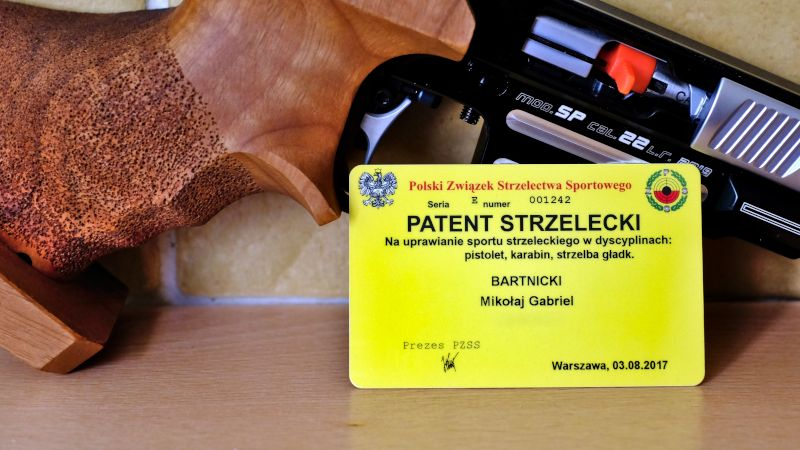

Kluczowy krok ku własnej broni palnej. Najważniejszy i najbardziej stresujący. Budzący spore emocje, mętne domysły, plotki. Ten moment w końcu nadszedł: musisz przystąpić do egzaminu na patent strzelecki! Na czym on polega? Jak w praktyce wygląda?
Pozwól, że przypomnę warunki, jakie musisz spełnić aby przystąpić do egzaminu. Oto one:
Jeśli spełniasz je wszystkie, to czas najwyższy abyś przystąpił do egzaminu i uzyskał patent strzelecki!
Egzaminy na patent strzelecki są organizowane przez kluby sportowe, kilka razy w roku. Nie musisz zdawać egzaminu w swoim klubie, możesz wybrać inny. Na portalu PZSS znajdziesz listę egzaminów jakie odbywają się w twoim województwie, z wyszczególnieniem ich daty i miejsca. Tam też możesz zapisać się na wybrany egzamin, co wiąże się niestety z poważnym wydatkiem: przystąpienie do egzaminu kosztuje 400 zł, którą to opłatę uiszczasz online, w momencie zapisu.
Nie możesz zapisać się na egzamin spoza twojego województwa. PZSS wprowadził tę regułę, ponieważ kandydaci masowo jeździli po Polsce zdawać egzamin w klubach, które miały opinię łatwych
. Głupie i nieprzemyślane ograniczenie, ale nic na to nie poradzisz.
Za dodatkową opłatą 60 zł, możesz otrzymać patent strzelecki w formie plastikowej karty (za darmo masz tylko decyzję w formie pliku PDF). Tę kartę fajnie mieć, ale w praktyce nie jest do niczego przydatna - realnie nie ma żadnej sytuacji, w której byłaby ona niezbędna. Więc jeśli masz lepsze zastosowanie dla 60 zł, to plastik możesz sobie odpuścić.
Przede wszystkim, wypełniony wniosek o wydanie patentu strzeleckiego. Dokument ten jest jednocześnie zgłoszeniem się na egzamin. Można go pobrać z portalu PZSS, co zapewne już zrobiłeś. Dokument ten wypełniasz swoimi danymi. Musisz też zaznaczyć jaki zakres patentu cię interesuje. Jeśli jeszcze tego nie wiesz, to wyjaśniam, że interesuje cię pełen zakres, czyli: pistolet, karabin, strzelba gładkolufowa.
Na wniosku o wydanie patentu strzeleckiego jest kilka miejsc na pieczątki. Interesują cię dwie z nich: pieczątka lekarza sportowego, potwierdzająca pozytywne orzeczenie o twoim stanie zdrowia, oraz pieczątka kierownika twojego klubu, świadcząca o odbytym przeszkoleniu strzeleckim. Podchodząc do egzaminu, musisz mieć obie!
Poza tym dokumentem, musisz mieć dowód osobisty i ulubiony długopis. Dodatkowo, ponieważ na egzaminie spędzisz parę godzin oczekując w różnych kolejkach, nie zaszkodzi kanapka, butelka wody i jakieś przenośne słuchawki z relaksującą muzyką.
Jak przed każdym innym egzaminem, odradzam zarywanie ostatniej nocy aby douczyć się na ostatnią chwilę. Zdecydowanie bardziej ci pomoże, jeśli wyśpisz się porządnie.
Nawet jeśli przyjdziesz przed czasem, to najprawdopodobniej zastaniesz sporą kolejkę oczekujących na zameldowanie się do egzaminu. Gdy odstoisz już ile trzeba, twoje dokumenty zostaną zweryfikowane, komisja wpisze cię na listę egzaminowanych, dostaniesz kartę na wyniki, po czym zostaniesz skierowany na część teoretyczną egzaminu.
Mimo, że na swój egzamin przybyłem pół godziny przed czasem, to na miejscu zastałem już około czterdziestoosobową kolejkę.
Czekając w kolejce, nie słuchaj ludzi stojących wokół ciebie. Czasami starają się oni w ostatniej chwili dokształcić, udzielają sobie wątpliwych rad i kadzą się wzajemnie jakimiś fałszywymi legendami, które tylko niepotrzebnie namieszają ci w głowie. Słuchawki z ulubioną muzyką na uszy i relaks - jesteś przygotowany i zdasz, więc nie oglądaj się na innych.
Pierwsza część egzaminu, od której zależy, czy w ogóle zostaniesz dopuszczony do strzelań, to test teoretyczny. Składa się on z dziesięciu pytań zamkniętych. Każde z nich ma trzy odpowiedzi, z których musisz wybrać jedną właściwą. Masz na to dwadzieścia minut.
Pierwsze cztery pytania dotyczą Ustawy o Broni i Amunicji. Musisz na nie odpowiedzieć bezbłędnie, nawet jedna nieprawidłowa odpowiedź powoduje niezaliczenie testu, a co za tym idzie - także całego egzaminu. Kolejne sześć pytań obejmuje przepisy Kodeksu Karnego dotyczące przestępstw związanych z bronią palną, regulaminy sportowych konkurencji strzeleckich, ograniczenia techniczne broni sportowej oraz zasady bezpiecznego posługiwania się nią. Tutaj możesz sobie pozwolić na jedną pomyłkę - dyskwalifikacja następuje dopiero przy dwóch błędach.
Oczywiście nie masz się czego bać. Test rozwiążesz prawidłowo w ciągu pięciu minut, bo przez ostatnie trzy miesiące intensywnie ćwiczyłeś na PatentStrzelecki.eu, prawda? Po sprawdzeniu testu, egzaminator wyczyta wyniki, zaś szczęśliwców, którzy zdali - skieruje na praktyczne sprawdziany ze strzelania.
Część praktyczna to szereg sprawdzianów strzeleckich: z pistoletu, z karabinu i ze strzelby. Możesz do nich podejść w dowolnej kolejności, jeśli tylko organizacja egzaminu na to pozwala (a zwykle tak właśnie jest). Sugeruję zacząć od tej broni, która jest dla ciebie najtrudniejsza, zaś łatwiznę zostawić sobie na deser.
Wybierając egzamin, nie wahaj się zadzwonić do rozważanego klubu, aby dowiedzieć się, z jakiej broni będziesz strzelał. Broń, którą dobrze znasz i do której przywykłeś na treningach, jest istotnym ułatwieniem.
Wszystkie trzy sprawdziany strzeleckie mają jeden wymóg wspólny, który zawsze jest bezwzględnie przestrzegany: bezpieczne posługiwanie się bronią.
Pierwsze co robisz po wzięciu broni do ręki, to sprawdzasz czy jest ona rozładowana. Lufę broni kierujesz wyłącznie w stronę kulochwytu. Ładujesz broń na komendę ładuj
, strzelasz na komendę start
, przerywasz strzelanie na komendę stop
. Poza momentem złożenia się do strzału, nie dotykasz spustu. Broń odkładasz na stolik zawsze rozładowaną, z włożonym wskaźnikiem bezpieczeństwa.
Wiem, że wszystkie te reguły znasz i ich przestrzegasz, ale egzamin jest jednak stresujący i emocje ułatwiają popełnienie trywialnych, a niebezpiecznych błędów. Zatem pilnuj się, bo w przypadku niebezpiecznych zachowań, nie masz szans na pobłażliwość egzaminatora!
Egzamin ze strzelania z pistoletu odbywa się z użyciem broni palnej lub pneumatycznej. Jaka to jest broń - to już zależy od konkretnego egzaminu, na każdym może być inaczej. W moim klubie miałem wybór - pneumatyk albo pistolet bocznego zapłonu. Regulamin dopuszcza też pistolet centralnego zapłonu, choć nie spodziewałbym się go często, ze względu na wyższą cenę amunicji.
Sam sprawdzian polega na oddaniu pięciu strzałów do tarczy sportowej, na dystansie 25 m, czyli w takich warunkach w jakich strzela się konkurencje pistolet sportowy oraz pistolet centralnego zapłonu. W przypadku pistoletu pneumatycznego, strzelasz w warunkach sportowej konkurencji pneumatycznej, czyli do regulaminowej tarczy na dystansie 10 m. W obu przypadkach, sprawdzian trwa pięć minut.
Warto pamiętać, że obecnie nie jest wymagana tradycyjna, jednoręczna postawa sportowa. Jeżeli tak ci wygodniej, to wolno ci chwycić broń oburącz w postawie bojowej. Egzaminator nie może ci tego zabronić, nawet gdy jest sportowym leśnym dziadkiem, który za jedyną prawdziwą postawę sportową uznaję tę olimpijską.
Strzelanie z pistoletu trzymanego dwiema rękami jest standardem w konkurencjach strzelectwa dynamicznego, zatem postawa ta jest równie sportowa, co tradycyjna postawa strzelecka z chwytem jednorącz.
Warunkiem zaliczenia sprawdzianu jest uzyskania odpowiedniego skupienia przestrzelin na tarczy. Przynajmniej cztery przestrzeliny z pięciu, muszą mieścić się wewnątrz okręgu o średnicy 15 cm dla broni palnej, lub 5 cm dla pneumatyków. Samo miejsce trafienia nie ma znaczenia, może to być nawet w rogu tarczy, poza punktowanym obszarem; istotne jest jedynie skupienie przestrzelin.
Strzelanie z karabinu odbywa się na podobnych zasadach jak strzelanie z pistoletu. Również masz pięć minut na oddanie pięciu strzałów do tarczy, i tak samo możliwe jest strzelanie z broni palnej lub pneumatycznej.
W tym pierwszym przypadku, będzie to karabinek sportowy (kbks) na amunicję bocznego zapłonu. Strzelasz w postawie leżącej, do regulaminowej tarczy dla karabinu sportowego, na dystansie 50 m. Co odróżnia egzamin od konkurencji sportowej, to możliwość oparcia karabinu o podpórkę, którą zwykle jest zwinięta mata strzelecka. Warto z tej możliwości skorzystać, bo to znaczne ułatwienie. Do zaliczenia egzaminu wymagane jest skupienie czterech z pięciu przestrzelin wewnątrz okręgu o średnicy 5 cm.
W przypadku karabinu pneumatycznego, strzelasz do regulaminowej tarczy na dystansie 10 m, w postawie stojącej. Podpórka nie jest dozwolona, zaś wymagane skupienie czterech z pięciu przestrzelin wynosi 2 cm. Moim zdaniem to znacznie trudniejsza opcja. Karabin pneumatyczny nie jest łatwą konkurencją; tarcza jest maleńka, sam karabin ciężki, zaś postawa - niewygodna. Jeśli tylko możesz, to wybierz kbks. No chyba, że trenujesz karabin pneumatyczny od dziecka.
Zdecydowanie najłatwiejszy ze strzeleckich sprawdzianów. Celem jest pięć popperów, czyli wysokich na pół metra, metalowych lizaków, o średnicy talerza obiadowego. Stoją sobie one w szeregu, w odległości 10 m od ciebie, uzbrojonego w strzelbę gładkolufową. Aby zaliczyć egzamin, musisz położyć cztery z pięciu popperów. Jest to trywialne zadanie. Bez problemu można zdać egzamin ze strzelby bez przygotowania, przychodząc prosto z ulicy.
Na moim egzaminie ze strzelby, egzaminatorzy wydawali amunicję po jednej sztuce. Gdy położyłem czwarty popper, to piątego naboju już mi nie dali, tacy oszczędni!
Z kronikarskiego obowiązku wspominam, że strzelbę można też zdawać według uproszczonych reguł dyscypliny trap, czyli strzelając do latających rzutków. Rzutki to takie gliniane talerzyki wielkości dłoni, miotane przez specjalną maszynę. Trzeba strącić trzy z pięciu wystrzelonych rzutków. Bez uczciwego treningu jest to bardzo trudne, wiec zdecydowanie polecam wybrać opcję z popperami.
Rzutek jest rodzaju męskiego (rzutek, nie rzutka). Zatem dopełniacz liczby mnogiej (strzelam do...) brzmi: rzutków. Tu jest Polska, więc tu się mówi po polsku!
Ani jedno ani drugie. Naprawdę, egzaminatorzy to są tacy sami ludzie jak ty czy ja. Twój los niewiele ich obchodzi, zatem nie mają oni żadnego interesu w tym żeby cię oblać, ani też w tym żeby cię na siłę przepchnąć.
Egzaminator zwykle jest doświadczonym instruktorem, który wyszkolił wielu strzelców, niejedno widział i dzięki temu łatwo oceni czy należy ci się patent strzelecki, czy raczej powinieneś znaleźć sobie jakieś inne hobby. Jeśli tylko widzi, że posługujesz się bronią pewnie i bezpiecznie, a przestrzeliny w tarczy tworzą dającą się zauważyć grupę - to zdasz. Nikt nie będzie niczego linijką mierzył co do milimetra. Ale jeśli dziury w tarczy rozsiejesz zupełnie losowo i będziesz się upierał, że mieszczą się w wymaganym skupieniu, to egzaminator po prostu przyłoży szablon do tarczy, natychmiast ucinając dalszą dyskusję.
Najlepiej potrenuj rzetelnie przed egzaminem, to nie będziesz miał tego typu dylematów. No i przypominam: bezpieczeństwo przede wszystkim! Jeśli złamiesz reguły bezpiecznego posługiwania się bronią, to nawet najbardziej przyjazny egzaminator wywali cię z egzaminu!
Nie bój się pytać egzaminatora w razie jakichkolwiek wątpliwości, lub poprosić go o pomoc w rozwiązaniu ewentualnych problemów technicznych z bronią. Lepiej wyjść na głupka i zdać egzamin, niż improwizując - postąpić nieprawidłowo, narażając się na porażkę.
Wdziej wór pokutny i posypując głowę popiołem, trenuj do poprawki, bo na szczęście regulamin PZSS przewiduje takową. Możesz do niej przystąpić najwcześniej pięć dni po oblanym egzaminie podstawowym. Ale skoro nie dałeś rady przygotować się przez trzy miesiące, to pięć dni też będzie za mało - zatem nie spiesz się i daj sobie czas, aby tym razem przygotować się uczciwie.
Zdawalność egzaminu na patent wynosi około 90%. Jeśli go nie zdałeś, to wyłącznie dlatego, że nie chciałeś go zdać!
Na egzaminie poprawkowym zdajesz strzelanie tylko z tej broni, która oblałeś w podstawowym terminie. No chyba, że położyłeś teorię (wstyd!), to wtedy powtarzasz cały egzamin.
Świetnie! Naprawdę szczerze ci gratuluję! Właśnie pokonałeś najważniejszy etap podróży od własnej broni palnej. Teraz będzie już tylko łatwiej. Najtrudniejsze już za tobą, pozostaje ci jeszcze trochę biurokracji i wydatków. Nic to jednak, bo pozwolenie na broń masz już praktycznie w kieszeni!
Świeżo otrzymany patent strzelecki zobaczysz najpóźniej po kilku tygodniach w swoim profilu na portalu PZSS; będziesz mógł pobrać stamtąd odpowiedni dokument w formie pliku PDF. Jeśli zamówiłeś i opłaciłeś plastikową kartę patentu, to dostaniesz ją pocztą.
W ramach nagrody za ładnie zdany egzamin, zrób sobie przerwę od treningów i nauki. Za to spędź trochę czasu przeglądając w internecie oferty sklepów z bronią. Twoje pozwolenie na broń jest coraz bliżej, więc zacznij planować zakupy, bo będziesz je robił wcześniej niż się spodziewasz!
Ten artykuł jest częścią kompletnego poradnika, składającego się z nastepujących rozdziałów: